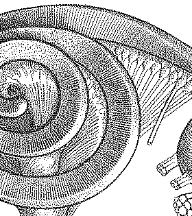

| SIGGRAPH2008 | ||||
|
Structure-Aware Halftoning |
||||
|
Wai-Man Pang Yingge Qu Tien-Tsin Wong Daniel Cohen-Or Pheng-Ann Heng | ||||
|
ACM Transactions on Graphics (SIGGRAPH 2008 issue), Vol. 27, No. 3, August 2008, pp. 89:1-89:8. |
||||
 |
 | |||
|
Original Image
|
Ostromoukhov method | Our method | ||
|
Abstract This paper presents an optimization-based halftoning technique that preserves the structure and tone similarities between the original and the halftone images. By optimizing an objective function consisting of both the structure and the tone metrics, the generated halftone images preserve visually sensitive texture details as well as the local tone. Compared to the standard ordered dither and the state-of-the-art error diffusion, our method preserves better texture content that is sensitive to HVS. It possesses the blue-noise property and does not introduce annoying patterns. Unlike the existing edge-enhancement halftoning, the proposed method does not suffer from the deficiencies of edge detector. Our method can be naturally extended to color halftoning. In multiple experiments and the user study, our method consistently obtains the best scores among all tested methods. |
Paper (PDF, 3.28M) |
|||
| Video (AVI, 19.1M) |
||||
|
Slides (7.62M) |
||||
| Blue noise study | ||||
|
BibTex:
@article{pang-2008-structure, year = {2008}, volume = {27}, number = {3}, pages = {89:1-89:8}, }
|
Convergency test | |||
| Color halftone | ||||
| More results |